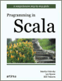
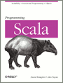

| Author: | Vassil Dichev |
|---|---|
| Date: | 02.11.2011 |
Java 9 is already released. It's called Scala

If I were to pick a language to use today other than Java, it would be Scala
—James Gosling
[...] if someone had shown me the Programming in Scala book [...] I'd probably have never created Groovy.
—James Strachan
If you need to use Java, you should be using Scala.
—Gilad Bracha
Java
Map<Integer,String> digits = new HashMap<Integer,String>(); digits.put(Integer(1), "one"); digits.put(Integer(2), "two");
Scala
// val means "public final" val digits = Map(1 -> "one", 2 -> "two") // no semicolons
Java
for (Map.Entry<Integer,String> entry: digits.entrySet()) { System.out.println(entry.getKey() + ": " + entry.getValue()); }
Scala
for ((key, value) <- digits) println(key + ": " + value)
Java
digits.put(1, "one");
Scala
// no primitive types! 1.to(3) // equivalent to 1 to 3
Java
enum Color { RED, GREEN, BLUE} switch (c) { case RED: ... case GREEN: ... }
Scala
sealed trait Color object Red extends Color object Green extends Color object Blue extends Color color match { case Red => ... case Green => ... // compiler warning- Blue }
Java
@Column(name ="user", nullable = false, updatable = false)
Scala
@Column(name ="user", nullable = false, updatable = false) val duke = new Mascot(name = "Duke", age = 15)
Java
@Override public String toString() { return "test"; }
Scala
// don't need return statement override def toString = "hey"
Java
import static java.lang.System.out out.println("hey")
Scala
import java.lang.System.out._ import java.sql.{Date=>SqlDate} import duke._ println("name: " + name + ", age: " + age)
Java
Map<> digits = new HashMap<Integer,String>();
Scala
val conference = "Java2Days" val num = 42 val digits = Map(1 -> "one", 2 -> "two")
Java
switch s { case "one": out.println(1) }
Scala
myVar match { case 1 => "int 1" case "one" => "string one" case s: String => "string: " + s case Array(1, _*) => "array starting with 1" case _ => }
Java
try {... } catch (ConnectException | SocketException ex) {
Scala
try {...} catch { case net: SocketException | ConnectException => ... case e: Exception => e.printStackTrace }
Java
try (BufferedReader br = new BufferedReader(new FileReader(path)) { return br.readLine(); }
Scala
using(new BufferedReader( new FileReader("file.txt"))) { f => println(f.readLine) }
def using[T<:{def close()}] (resource: T) (block: T => Unit) { try { block(resource) } finally { if (resource != null) resource.close() } }
Java
x -> x + 1 (int x) -> x + 1
Scala
(x: Int) => x + 1 x => x + 1 _ + 1 (1 +)
Pattern matching
entry match { case (key, value) => println(key, value) } val (key, value) = getEntry for ((key, value) <- digits) println(key + ": " + value)
No primitives
Arrays are collections
No
Scala is fun(ctional)
for (i <- 1 to 100 if i % 2 == 0 ) yield (i * 3)
Scala is parallel
for (i <- (1 to 100).par if i % 2 == 0 ) yield i * 3
 |
Beginning Scala |
|

|
Programming in Scala |
|

|
Programming Scala |
|